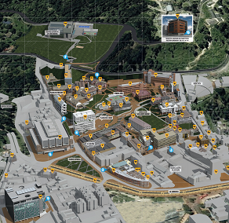

Ubicación de la Ruta
Aquí podras mirar la ubicación de la ruta en tiempo real y el tiempo de llegada a tu punto de recogida.

| Estado de ruta | Sin novedades |
| Tiempo Estimado de llegada | 1 min 0 seg |